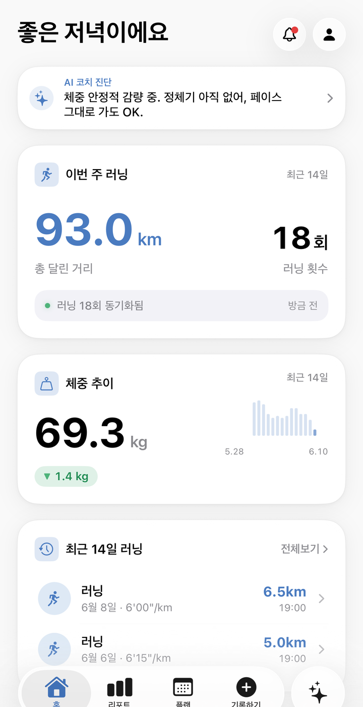
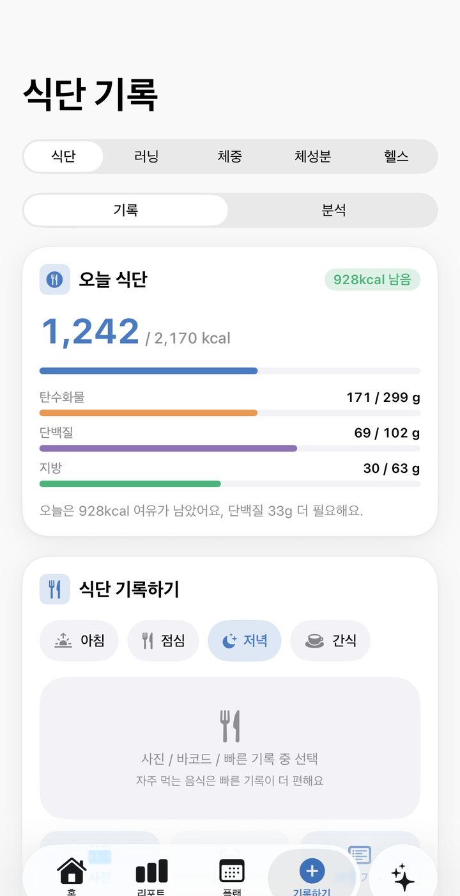
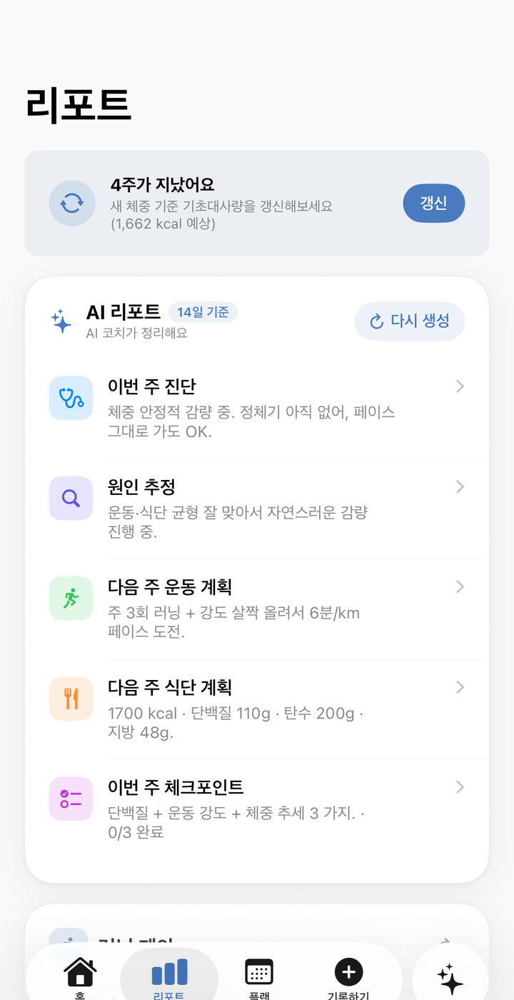
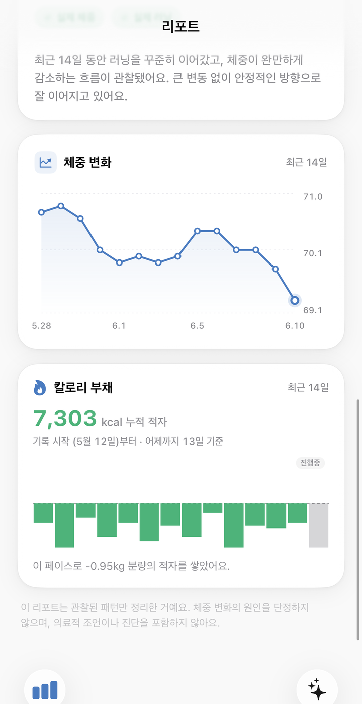
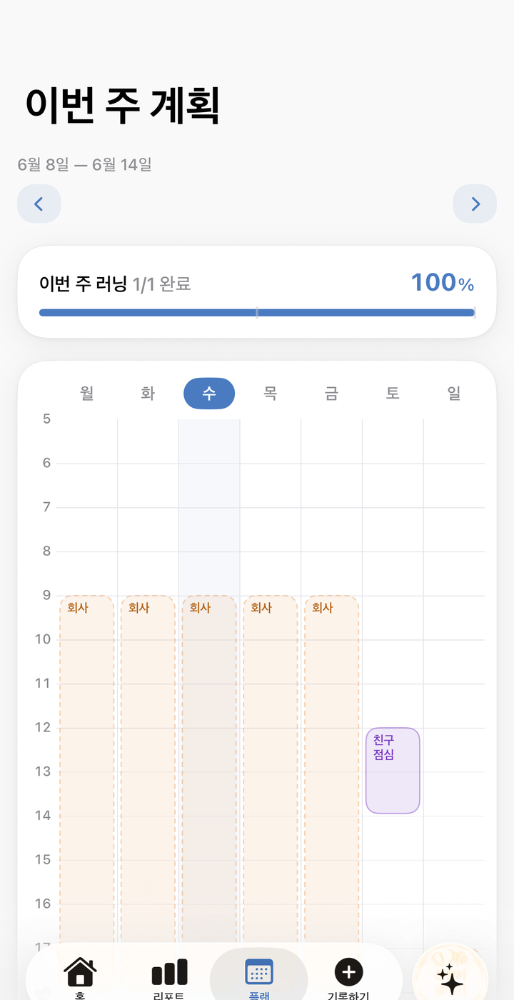
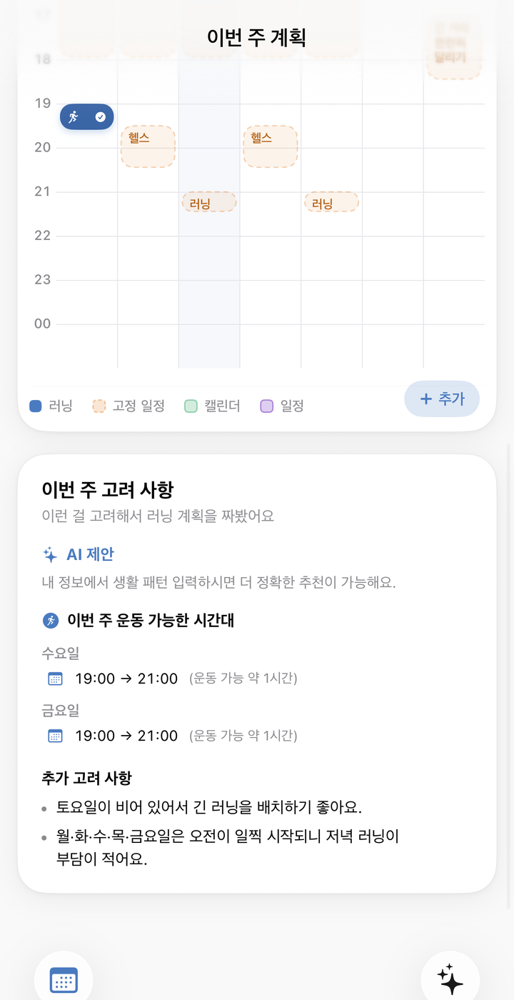
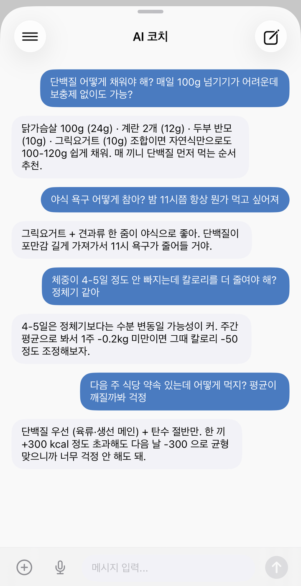
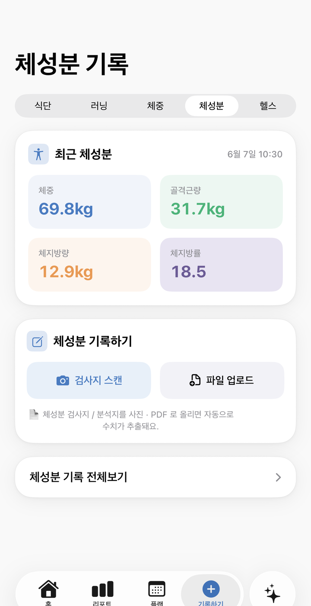
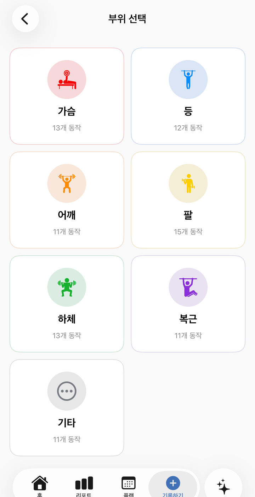

러닝·식단·체중·웨이트가 한 곳에 모이면 AI 코치가 내 몸의 패턴을 읽고, 다음 행동까지 정리해 드려요.

"일주일을 뛰었는데, 체중은 왜 안 줄까요."
— 운동은 데이터로 남는데, 아무도 이유를 짚어주지 않습니다.
"러닝 앱, 체중계 앱, 식단 메모. 다 따로예요."
— 흩어진 기록은 서로 연결되지 않아, 읽을 수 없는 숫자로 남습니다.
"주 5회 계획은 야근 앞에서 무너져요."
— 내 일정을 모르는 계획은 계획이 아닙니다.

음식 사진을 올리면 AI가 음식명·양·칼로리·탄수화물·단백질·지방을 정리합니다. "밥은 절반만 먹었어" 한마디면 알아서 다시 계산하고, 가공도와 혈당 영향까지 음식마다 평가해요.
찍기만 하면 끝 ✓
"체중 안정적 감량 중.
정체기 아직 없어,
페이스 그대로 가도 OK."
— 6월 둘째 주, AI 리포트의 '이번 주 진단' 전문
14일의 기록을 AI 코치가 읽고 한 장으로 정리합니다. 진단, 원인 추정, 다음 주 운동·식단 계획, 체크포인트까지 — 트레이너의 주간 면담처럼.


14일 체중 곡선과 칼로리 부채(누적 적자)를 함께 보면, 지금 페이스가 −0.95kg 분량의 적자를 쌓았다는 게 한눈에 보입니다. 관찰된 패턴만 정리하고, 의료적 단정은 하지 않습니다.
고정 일정과 생활 패턴을 올리면 AI가 현실적으로 운동 가능한 시간대를 찾아 러닝·헬스를 배치하고, 30분 전에 알려줘요. 시간표 사진은 OCR로 한 번에 등록됩니다.


4–5일은 정체기보다는 수분 변동일 가능성이 커. 주간 평균으로 봐서 1주 −0.2kg 미만이면, 그때 칼로리를 50 정도만 조정해보자.
닭가슴살 100g(24g) · 계란 2개(12g) · 두부 반 모(10g) · 그릭요거트(10g) 조합이면 자연식만으로 100–120g은 쉽게 채워. 매 끼니 단백질 먼저 먹는 순서를 추천해.
— 실제 코치 대화에서 발췌. 사진을 보내면 채팅 안에서 식단 분석까지.

체성분 검사지는 사진 한 장으로 수치가 자동 추출되고, 웨이트는 부위별 동작 카탈로그에서 골라 세트·무게를 기록합니다. 근육 회복 시간을 고려해 다음 운동을 추천해요.

| 입력 | 검사지 사진 · PDF |
| 추출 항목 | 체중 · 골격근량 · 체지방률 |
| 이번 측정 | 골격근 31.7kg · 체지방률 18.5% |

| 부위 | 가슴 · 등 · 어깨 · 팔 · 하체 · 복근 |
| 동작 | 86개 — 폼 가이드 포함 |
| 기록 | 세트 × 무게 × 횟수 |
좌우로 넘겨보세요 — 홈부터 코치 대화까지, 앱의 실제 화면 그대로.
식단은 사진 한 장, 체중은 숫자 하나. 러닝은 Apple Health에서 자동으로 들어옵니다.
운동·식사·체중 변화를 한 타임라인에 묶어, 어떤 날 무엇이 효과 있었는지 패턴을 찾습니다.
14일 리포트와 주간 플랜으로 "다음 주에 뭘 할지"가 정리됩니다. 궁금하면 코치에게 바로 질문하세요.
잘 잔 날의 러닝은 가볍고, 못 잔 밤 다음 날은 식욕이 흔들립니다.
다음 업데이트에서 수면이 연결됩니다 — 운동과 식단, 그리고 회복까지 함께 읽는 코치.
우리는 기록 앱이 아니라,
내 몸의 해석을 만듭니다.
좋은 코치는 비쌉니다. PT 한 회에 수만 원 — 정작 필요한 건 매일의 데이터를 읽고 "다음에 뭘 할지" 말해주는 한 사람인데요. ARECURA는 그 해석을 월 7,900원의 AI 코치로 모두에게 돌려줍니다.
출발은 러닝·식단·체중·웨이트·체성분. 다음은 수면과 스트레스, 검진 데이터까지 — 흩어진 건강 기록을 하나의 타임라인으로 모아, 내 몸에 관한 질문에 답하는 단 하나의 해석 레이어가 됩니다.
끝에는, 묻기 전에 먼저 다가오는 코치가 있습니다. "이번 주 회복이 부족해요, 오늘은 가볍게 걷죠." — 기록→분석→제안이 대화 하나로 이어지는 미래를 만듭니다.
Apple Health 러닝과 체중·식단 기록을 연결해 14일 패턴을 분석하고, 변화의 원인을 짚습니다.
분석 결과와 내 일정·컨디션으로 주간 운동·식단 계획을 자동 생성하고, 주중 상황에 맞게 조정합니다.
대화만으로 기록→분석→조정이 이어지는 코칭 루프. 먼저 말 걸어주는 프로액티브 코치로.
러닝·체중 기록은 기본적으로 내 기기에 저장됩니다. AI 분석에는 요약된 수치만 전달되며, 원본 사진과 로그를 외부에 쌓아두지 않습니다. Apple Health 접근 권한은 언제든 끌 수 있어요.
아니요. 감량·유지·린매스업(증량)까지 목표를 선택할 수 있고, 칼로리·단백질 목표와 리포트의 톤이 목표에 맞춰 달라집니다.
네. 식단 AI 분석, 체중·체성분 추적, 웨이트 기록만으로도 충분히 쓸 수 있습니다. 러닝은 Apple Health와 연동되는 강력한 옵션 중 하나예요.
아니요. ARECURA는 관찰된 패턴을 정리해주는 코치이지, 의료 기기가 아닙니다. 진단·처방을 하지 않으며, 건강 이상이 의심되면 전문의 상담을 권합니다.
iOS 베타를 준비 중입니다. 핵심 기능은 무료로 시작하고, AI 분석 횟수를 늘려주는 Plus 플랜(월 7,900원 예정)을 함께 선보일 계획이에요. 아래에서 출시 알림을 신청해 주세요.
메일을 남기면 App Store 출시 소식을 가장 먼저 알려드릴게요.
스팸 없이, 출시 알림 딱 한 번만 보냅니다.